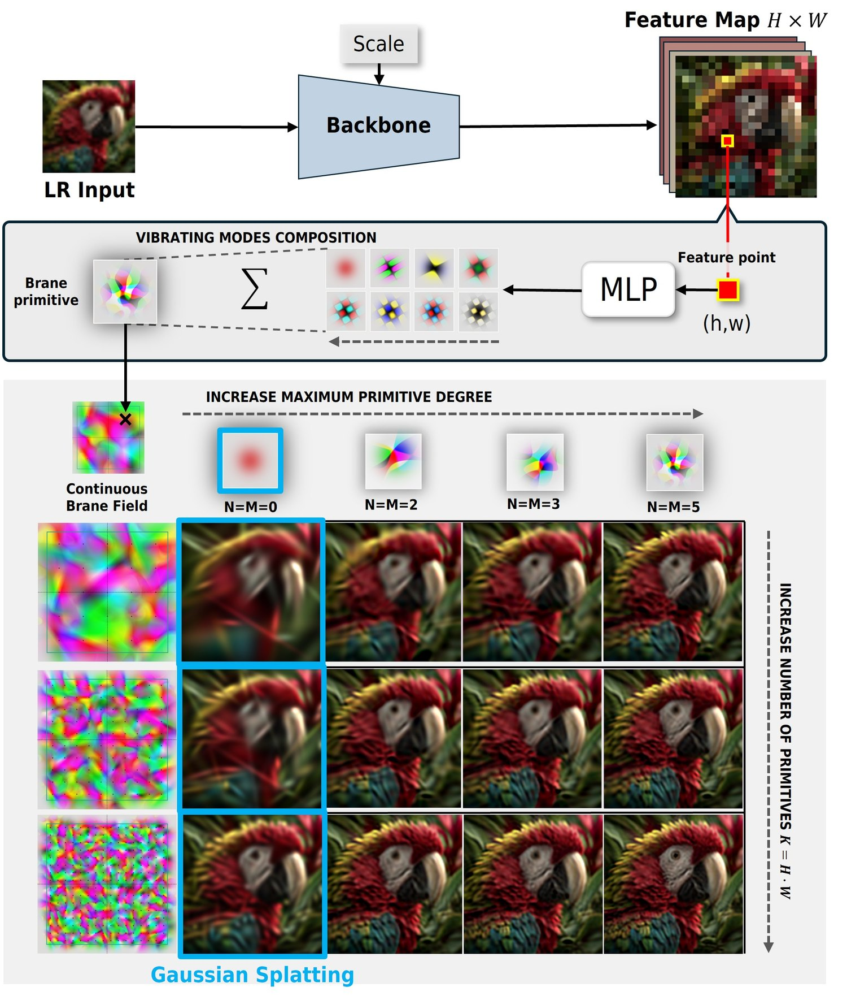
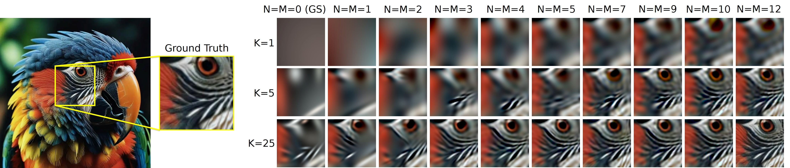
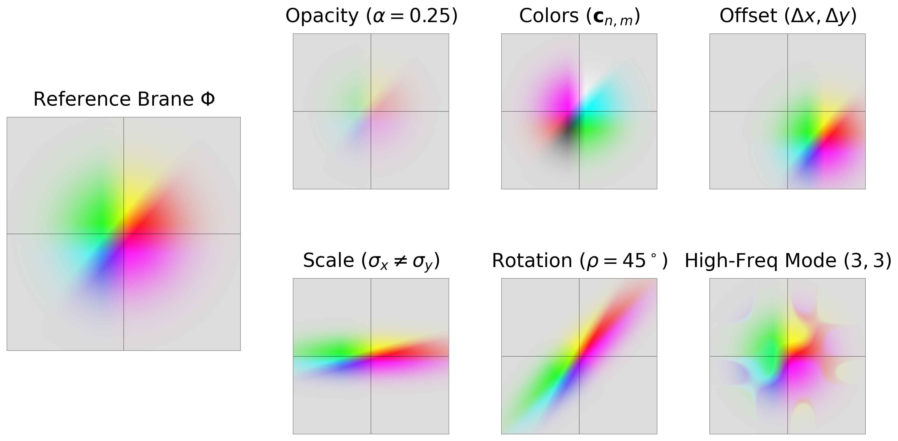
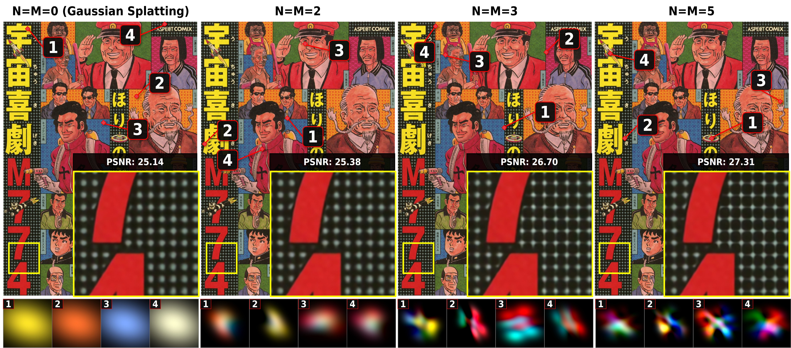
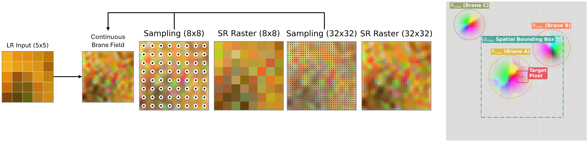
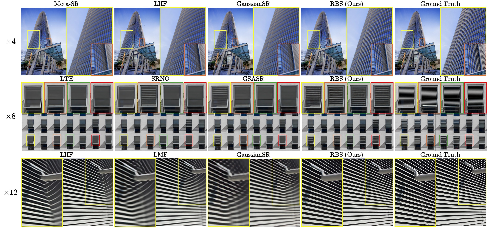
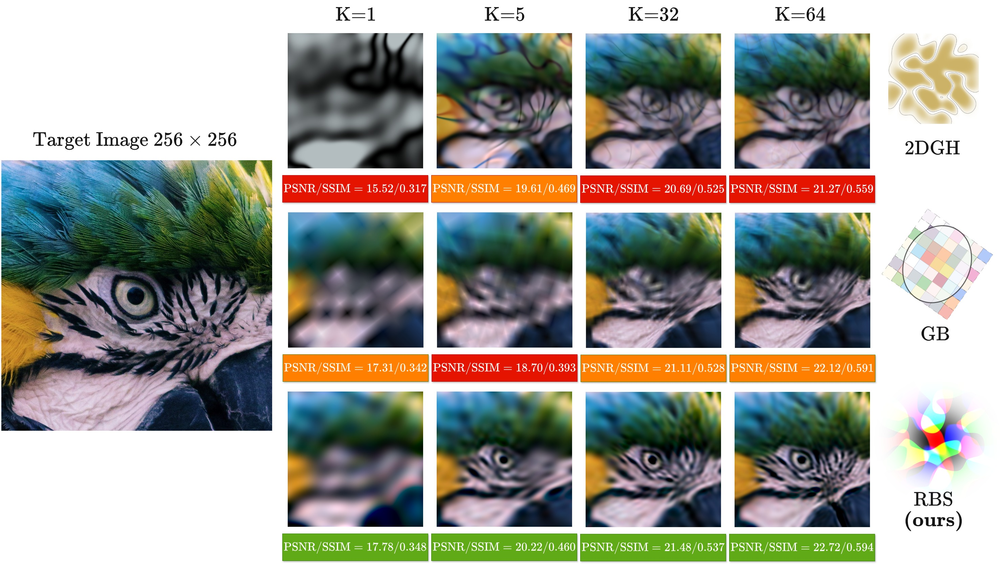
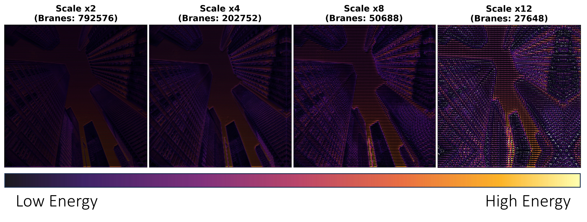
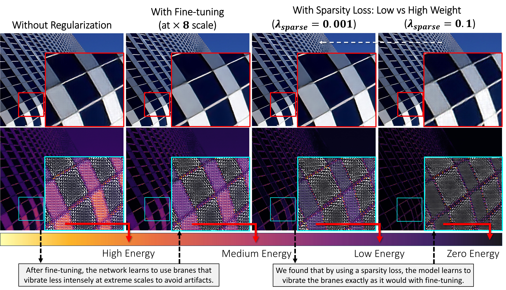

RBS
Accepted at the IEEE/CVF Winter Conference on Applications of Computer Vision (WACV) 2027
Resonant Brane Splatting for Arbitrary-Scale Super-Resolution
1University of Pisa 2ISTI-CNR, Pisa
Gaussian Splatting made arbitrary-scale super-resolution fast, but a Gaussian is a smooth blob of a single color. Edges and textures have to be rebuilt from many overlapping, well-aligned splats, and that overlap is what slows rasterization down. RBS replaces the Gaussian with a Brane: the same footprint, filled with Gaussian-Hermite modes that each carry their own color. One primitive can then hold local contrast, edges and multi-colored texture, far fewer splats need to overlap, and RBS reaches a better speed–quality trade-off than previous Gaussian Splatting methods.
\({N=0}\)
- Degree
- \({N=M=0}\)
- Turning point
- \({R_{\max}=1.00}\)
This is the primitive we propose, the Brane. The network learns to make it more or less complex depending on how much detail the image has where it has to be rendered.
Video
The WACV presentation.
The official presentation video. Watch it on YouTube.
Abstract
Arbitrary-Scale Super-Resolution (ASR) reconstructs images at continuous magnification factors. Recent methods accelerate inference by replacing computationally heavy implicit neural decoders with explicit 2D Gaussian Splatting (GS). However, since standard Gaussians are smooth low-pass primitives, modeling edges and fine textures requires multiple overlapping, well-aligned splats, which creates severe bottlenecks during rasterization.
To address this, we introduce Resonant Brane Splatting (RBS), a feed-forward ASR framework. RBS replaces flat Gaussians with Branes: expressive primitives that emit spatially varying colors to natively model local contrast and complex textures within a single footprint. We achieve this by augmenting the standard Gaussian envelope with internal Gaussian-Hermite modes, assigning a distinct color coefficient to each. The zero-order mode recovers standard GS, while higher-order modes capture high frequencies.
We predict Brane parameters directly from low-resolution features. Because Branes provide a mathematically richer formulation than simple Gaussians, far fewer primitives need to overlap to reconstruct a given target pixel. To exploit this, we introduce an efficient fully differentiable rasterizer with a precise culling strategy based on the classical quantum turning point. This allows us to safely skip negligible regions, drastically reducing the rendering overhead. Experiments on standard ASR benchmarks show that RBS improves reconstruction quality over implicit and GS baselines, while achieving superior speed-quality trade-off than prior GS methods.

Method
From one flat Gaussian to a vibrating Brane, in five steps.
RBS follows the splatting-based ASR framework of GSASR. An image encoder (EDSR or RDN) and a Transformer produce a feature map, which can optionally be upsampled by an integer factor \(u\), giving a grid of \({K=u^2HW}\) features. Each feature predicts one primitive. The primitives are then rendered at the target resolution \({H_{\mathrm{SR}}=\lfloor Hs\rfloor}\) by \({W_{\mathrm{SR}}=\lfloor Ws\rfloor}\), for any real scale \(s\). The only thing that changes with respect to GSASR is the primitive, and the rasterizer that goes with it.
-
A Gaussian has one color
In standard Gaussian splatting every primitive \(k\) has one color \(\mathbf{c}_k\), an opacity \(\alpha_k\) and a Gaussian envelope \(E\). A target pixel \((x,y)\) is the sum of what overlaps it:
\[ C(x,y)=\sum_{k=1}^{K}\alpha_k\,E\big(x'_k,\,y'_k\big)\,\mathbf{c}_k,\qquad E(x',y')=\exp\!\Big(-\tfrac12\,\big(x'^2+y'^2\big)\Big)\]
Here \((x'_k,y'_k)\) are the coordinates of the pixel in the canonical frame of primitive \(k\): centered on it, rotated by \(\rho_k\) and divided by its scales,
\[ x'=\frac{\cos\rho\;d_x+\sin\rho\;d_y}{\sigma_x},\qquad y'=\frac{-\sin\rho\;d_x+\cos\rho\;d_y}{\sigma_y}\]
where \((d_x,d_y)\) is the offset between the pixel and the center of the primitive. This is efficient, but locally limited: the color is constant over the footprint, so every high-frequency detail has to be explained by geometry and by overlap with neighboring splats. Set the degree to 0 in the demo at the top of the page and you get exactly this primitive.
-
Fill the footprint with vibrating modes
A Resonant Brane keeps the Gaussian envelope and fills it with Gaussian-Hermite modes. Inside the envelope it uses normalized Hermite polynomials, computed with the usual recurrence,
\[ \bar H_n(z)=\frac{H_n(z)}{\sqrt{2^{n}\,n!}},\qquad H_0=1,\quad H_1=2z,\quad H_n=2z\,H_{n-1}-2(n-1)\,H_{n-2}\]
and combines them along the two axes into modes
\[ \Psi_{n,m}(x',y')=\bar H_n(x')\,\bar H_m(y')\]
Each mode has a pattern of signed lobes: \(n\) vertical and \(m\) horizontal nodal lines. Hover over the modes below.
\(\Psi_{0,0}\)
Hover or tap a mode.
- positive lobe
- negative lobe
- quantum turning point \(R_{\max}\) of the mode, its value in yellow
Every mode is drawn in the same canonical frame, inside the same Gaussian envelope. The dashed circle is the quantum turning point of that mode: it starts at \(1\) for \(\Psi_{0,0}\) and grows to \({\sqrt{11}\approx3.32}\) for \(\Psi_{5,5}\). A Brane is culled with the radius of its highest mode (step 4).
Every mode gets its own RGB coefficient \(\mathbf{c}_{n,m}\), and the Brane emits
\[ B(x,y)=\alpha\,E(x',y')\sum_{n=0}^{N}\sum_{m=0}^{M}\mathbf{c}_{n,m}\,\Psi_{n,m}(x',y')\]
The zero-order mode \({\Psi_{0,0}=1}\) is the Gaussian splat of step 1. Higher orders act as signed color residuals: they add or subtract color locally inside the same footprint, so a single primitive can synthesize contrast, edges and multi-colored texture without being split into many small or stretched Gaussians.
Gaussian-Hermite functions had already been used in splatting to make the shape of the opacity kernel richer than an ellipse (2DGH, mostly for per-scene 3D fitting). RBS uses the same modal basis for appearance instead, in a feed-forward 2D model for ASR. The name is a conceptual analogy: in M-theory vibrating branes generalize strings, and our primitive adopts the exact eigenfunctions of the quantum harmonic oscillator.

Brane expressiveness. Left: cropped ground truth. Right: reconstructions varying the number of Branes (\(K\)) and the Gaussian-Hermite degrees (\(N\), \(M\)), where \({N=M=0}\) is standard Gaussian Splatting. Click to zoom. -
Predict a Brane from every feature
Small MLP heads turn each feature vector into the full state of a Brane:
\[ \Phi_k=\big[\,\Delta x,\ \Delta y,\ \sigma_x,\ \sigma_y,\ \rho,\ \alpha,\ \mathbf{c}_{0,0},\ \dots,\ \mathbf{c}_{N,M}\,\big]\]
The Brane starts at the center of its feature cell and moves by a sub-pixel offset \((\Delta x,\Delta y)\). The scales \(\sigma_x,\sigma_y\) and the opacity \(\alpha\) pass through a sigmoid, the rotation is \({\rho=\pi\tanh(\cdot)}\). The base color \(\mathbf{c}_{0,0}\) goes through a sigmoid so it stays a valid color, while all higher modes go through \(\tanh\), so they are signed and bounded. With \({L=(N+1)(M+1)}\) modes a Brane has \({6+3L}\) numbers, against 9 for a Gaussian.

Effect of Brane parameters. Mode colors control the internal appearance of the primitive, while footprint and opacity control where and how strongly the Brane contributes. How high should the degree be? In the paper’s ablation, higher-order modes progressively capture sharper details and complex textures than standard Gaussians, up to \({N=M=5}\). Predicting too many modes (\({N=M=7}\)) in a single feed-forward pass hampers generalization and causes artifacts in smooth regions, a limitation that the Results section comes back to.

Impact of Brane degree. Higher-order modes (\({N=M\in\{2,3,5\}}\)) progressively capture sharper details and complex textures than standard Gaussians (\({N=M=0}\)). -
Rasterize, and skip what cannot matter
Evaluating every Brane for every output pixel costs \(O(K\,H_{\mathrm{SR}}W_{\mathrm{SR}})\). The differentiable CUDA rasterizer cuts this in two stages. First, a bounding box \(d_{\max}\) around the target pixel, in the continuous Brane field, keeps only nearby Branes. Second, a check in each Brane’s own canonical space uses the quantum turning point of the harmonic oscillator, the radius beyond which a mode of order \(n\) decays exponentially:
\[ R_{\max}=\sqrt{2\,n_{\max}+1},\qquad n_{\max}=\max(N,M),\qquad \text{discard if }\ x'^2+y'^2>R_{\max}^2\]
The radius grows with the degree: \({R_{\max}=\sqrt7\approx2.65}\) for \({N=M=3}\), \(5\) for \({N=M=12}\). Because Branes keep texture inside the primitive, a pixel is covered by fewer of them to begin with, and this boundary then trims a field that is already sparse. Click a pixel below, then change \(d_{\max}\) and the degree.
The three Branes of the paper’s figure on a 12×12 output grid. The Brane field is continuous: the squares are output pixels and the dots their centers. Each dashed ellipse is the quantum turning point \(R_{\max}\) of a Brane, drawn solid when the selected pixel lies inside it. Counts are Brane–pixel pairs over all 144 pixels. In the paper’s ablation, \(R_{\max}\) culling saves up to about 65% of rendering time with no change in PSNR or SSIM at the precision reported.

Rasterization and culling. Decoded LR features form a continuous Brane space where the sampling grid resolution dictates the SR resolution (left). The color of a target pixel is computed by culling primitives outside the box \(d_{\max}\) or beyond the quantum turning point \(R_{\max}\) (right). -
Try it: one Brane against many Gaussians
One Gaussian is a smooth blob of one color. A single Brane of high degree can fit a patch with edges and texture, where even a dozen overlapping Gaussians fall short. Here is a small experiment you can run: choose a patch, and each model fits it from a random start, live, in your browser. It follows our toy fitting scripts: the same parameterization, mean squared error and AdamW with learning rate 0.08. It illustrates the primitive; it is not the trained network.
Drag the square, or pick a patch.
step 0
Results
All numbers come straight from the paper’s tables.
Fewer primitives, richer Branes
The feature map has \({uH\times uW}\) positions and each one becomes a Brane, so \(u\) sets how many primitives are rendered. GSASR uses \({u=4}\). RBS at \({u=4}\) renders the same number of primitives, so any gain comes from the primitive itself. At \({u=2}\) and \({u=1}\) there are 4× and 16× fewer of them, and every Brane has to describe more of the picture: at scale \(s\) it covers \((s/u)^2\) output pixels. Its degree therefore climbs faster as the scale grows, the smaller \(u\) is.
Every Brane starts as a Gaussian, degree 0. Raise the scale and watch the primitives gain modes, and with them shape and color. Then switch \(u\) to compare how far they get at ×12.
What the paper measures at this scale
A schematic of the idea. Each cell holds one Brane, with random colors that shrink with the mode order; the degrees (4, 7 and 12 at ×12 for \({u=4,2,1}\)) show the trend and are not measured values. The window covers 4×4 input positions, so it holds 16, 64 or 256 Branes. The cards report the paper’s numbers: quality on Urban100 (Y channel), cost on 720×720 DIV2K crops with an RDN backbone, on one H100.
Cost across scales
Larger scales process smaller inputs, so cost falls as the scale grows. With the same primitive count as GSASR (\({u=4}\)), RBS is 1.9 to 3.1 times faster at every scale and uses about 3 to 5% more memory. \({u=2}\) and \({u=1}\) render 4 and 16 times fewer primitives. At ×2, going from \({u=4}\) to \({u=2}\) drops memory from 13.9 GB to 3.9 GB, and \({u=1}\) needs 2.2 GB, about 83% less than GSASR (13.5 GB). That is close to the lightweight GRAPE (2.6 GB) with 3.65 dB more PSNR.
Inference cost across scales
720×720 DIV2K crops, one H100. All models use an RDN backbone except GRAPE (EDSR) and ContinuousSR* (HAT), the only ones their authors provide. Hover a line to isolate it.
Quality against cost
Each point is a method
Up is better and left is faster. Bubble area is GPU memory at that scale. The dashed line joins the methods that no other method beats on both axes. Quality on Urban100, which the paper picks as the hardest benchmark because of its dense structure; PSNR and SSIM are computed on the Y channel. *ContinuousSR uses the released HAT-based model; GRAPE uses EDSR.
On Urban100, RBS has the highest PSNR at every scale (\({u=2}\) or \({u=4}\)), the highest SSIM at every scale, and the lowest LPIPS at every scale (\({u=4}\)). It does not win everything: on DISTS, GSASR leads at ×8 and ×12, with ContinuousSR* and RBS right behind, and the lightweight GRAPE is far faster, at a much lower quality. The paper reads the results as the best speed–quality balance among Gaussian Splatting methods, with \({u=2}\) as the most convenient point.
Qualitative comparison

Why the primitive matters: alternatives
To test other expressive 3D primitives in 2D ASR, the authors plugged 2DGH and Gaussian Billboards (GB) into the same rasterizer and retrained both from scratch. 2DGH deforms its footprint but still emits a flat color, so it cannot be culled exactly and still needs dense overlap. GB replaces the flat color by a discrete \({N\times N}\) texture, which is better, but remains discrete; RBS models color continuously, which suits the continuous nature of ASR. With one primitive of the same capacity, a Brane fits more detail, and the live fit above has a tab for exactly this comparison.
RBS, Gaussian Billboards and 2DGH
Urban100, EDSR backbone, retrained from scratch in the same rasterizer. For equal capacity, RBS and 2DGH use \({N=M=12}\), matching a \({13\times13}\) grid in GB. Times are approximate (the paper reports “∼”); the paper gives one time for both GB and 2DGH.

Where it gives ground
Smooth images. On a smooth benchmark such as Set5, flat Gaussians are already near-optimal, while RBS has to spend capacity switching its higher modes off. RBS (\({u=4}\)) therefore trails GSASR slightly in PSNR and SSIM, but keeps an edge in the perceptual metrics LPIPS and DISTS (and in SSIM at ×12). Pick a metric below.
Vibrating too much. To make up for fewer primitives at large scales, Branes vibrate harder, and the model trained only on scales 1 to 4 does not suppress that vibration in smooth regions at higher scales, which shows up as aliasing. Two fixes work: fine-tuning on scales 1 to 8, which lets the network shrink the higher-order coefficients in flat areas, and an explicit \(L_1\) sparsity penalty on them, which gives practically identical results when tuned. Both leave many near-zero coefficients, which the rasterizer exploits with Adaptive Mode Culling: a mode whose coefficients are below \({10^{-4}}\) is skipped. It brings modest speedups with no quality loss.


Perfect generalization to extreme scales is left as future work, as the paper itself states.
Code
Inference code, evaluation code (PSNR, SSIM, LPIPS, DISTS) and the two pretrained models are public. All results in the paper were obtained on a single NVIDIA H100; the Brane rasterizer is a custom CUDA extension, so you need an NVIDIA GPU to run it. You can also try the model in the online demo without installing anything.
conda create -n rbs_env python=3.11 -y conda activate rbs_env git clone https://github.com/GiulioFede/ResonantBraneSplatting.git cd ResonantBraneSplatting # PyTorch for your system (example: CUDA 12.4) pip install torch torchvision torchaudio --index-url https://download.pytorch.org/whl/cu124 pip install -r requirements.txt pip install -e . # custom CUDA Brane rasterizer cd utils/brane_utils python setup_branecuda.py install
pip install gdown # RDN backbone gdown 1i7bC6Lid1_q-VW9r-XQca4nCIh5OuSqO -O checkpoints/RDN_rbs_v7.ckpt # EDSR backbone gdown 1icbigtNcfQnFqySFXcdpamzOkwywLRZm -O checkpoints/EDSR_rbs_v8.ckpt
python inference/evaluate_inference.py \
--path_to_lr_image ./data/demo_lr_images/parrot.jpg \
--scale_to_evaluate 2 \
--results-dir ./results \
--ckpt_path ./checkpoints/RDN_rbs_v7.ckpt \
--model_name RBS_v7
# PSNR and SSIM on the DIV2K cropped benchmark (x4)
python inference/evaluate_metrics.py \
--gt data/benchmarks/DIV2K_720_cropped_benchmark/DIV2K/x4/GT \
--restored results/DIV2K/x4 \
--scale 4
# same arguments for inference/evaluate_metrics_lpips.py and inference/evaluate_metrics_dists.py
Pretrained models
RBS_v7 | RDN encoder, checkpoint RDN_rbs_v7.ckpt. |
|---|---|
RBS_v8 | EDSR encoder, checkpoint EDSR_rbs_v8.ckpt. |
Both models are defined with Hermite degree \({N=M=3}\) and an upsampling factor of 2 (\({u=2}\)) in models/model_versions.py. The repository also includes a speed-and-memory benchmark on 720×720 center crops of DIV2K; it is not an official benchmark, so use the official DIV2K evaluation for paper comparisons.
Release status
- Inference code
- Evaluation code: PSNR, SSIM, LPIPS, DISTS
- Pretrained checkpoints, RDN and EDSR
- Online demo on Hugging Face
- Training instructions: the script (
train.py) is in the repository, not yet documented
BibTeX
@misc{federico2026resonantbranesplattingarbitraryscale,
title={Resonant Brane Splatting for Arbitrary-Scale Super-Resolution},
author={Giulio Federico and Giuseppe Amato and Claudio Gennaro and Fabio Carrara and Marco Di Benedetto},
year={2026},
eprint={2606.29453},
archivePrefix={arXiv},
primaryClass={cs.CV},
url={https://arxiv.org/abs/2606.29453},
}